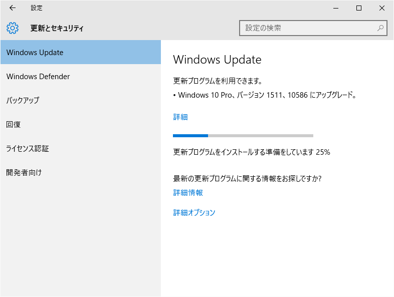
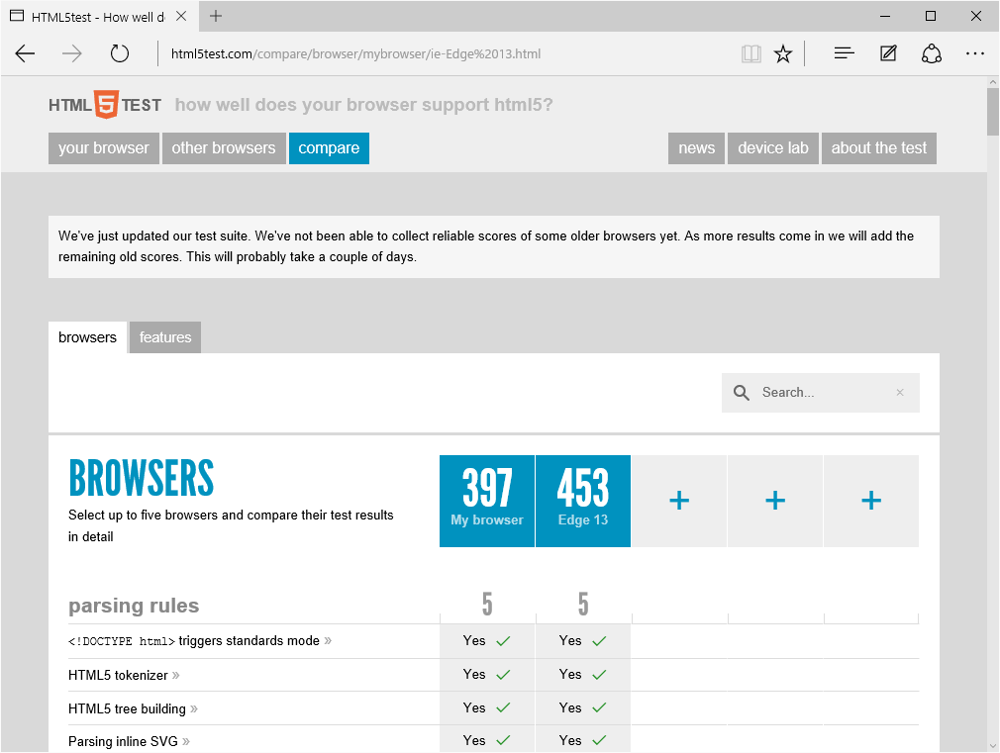
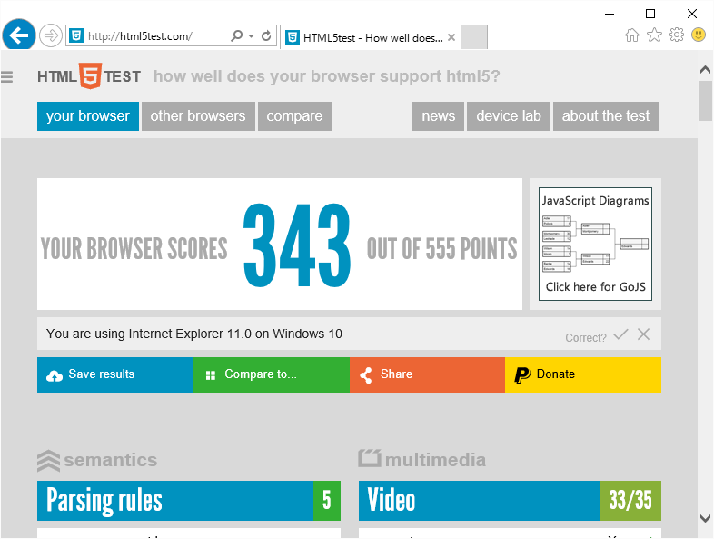

Microsoft Edge の HTML5Test は Threshold 2 で 402 → 458 に
公開日：

うちにはなかなか Windows 10 の Update がこなくて*1、
お使いのデバイスは最新の状態です。最終確認日時: 今日、10:46
— だるやなぎ（LINE スタンプ販売中） (@daruyanagi) 2015, 11月 14昨日は早めにお布団に入ってしくしく泣いていたのだけれど、今日のお昼になってやっと Update が降ってきた。遅いぞー（#^ω^）
早速更新しているのだが、その間に Microsoft Edge がどれだけ進化したのか、ちょっと見てみることにしよう。
Windows 10 build 10240（デスクトップ）の「Microsoft Edge」の HTML5Test の結果。なんかみんな“402”がでるらしいんだけど、うちは“397”だった。なんでだろう、脆弱性緩和ツールとかいれてるからかもしれない。
ちなみにこの数値は、だいたい iPhone の Safari あたりと同じぐらいだと思う。
一方、Windows 10 build 10586（Insider Preview/Surface Pro 3）の「Microsoft Edge」の HTML5Test の結果は“458”。「Firefox 42」の“468”に迫る結果で、なかなかだと思う。ちなみに「Google Chrome 46」は“521”だった（いずれもちょっと動作があやしい手元の環境での計測）。

ポイント加算の内訳は
- Elements：+1
- Forms：+16
- Input：+3
- Responsive images：+10
- 2D Graphics：+7
- Peer To Peer：+15
- User interaction：+2
- Web Components：+2
って感じ。フォーム対応の拡充とレスポンシブイメージ、ObjectRTC への対応あたりでポイントを稼いだ感じやね。Build 10576 でWebM/VP9サポートが削除されなければ（いずれ再対応する模様）、もうちょっと点数が稼げたかも。個人的には Web Components のサポートを厚くしてくれたら、ちょっと勉強したいかなって思う。
HTML5Test は機能の多さだけを計るテストなので、このポイントさえ高ければいいってもんでもないけど、「Microsoft Edge」は十分使えるブラウザーになってると思う。まだ拡張機能がないから、メインでは使う気にはなれないけど。
おまけ

「Internet Explorer 11」は“343”→“348”。うちの Windows 10 環境はちょっとおかしいっぽいので、“348”で変わらずなんだろう*2。
html5test で 5 点低いのが出るのは多分ポインターイベント
— しばやん (@shibayan) 2015, 11月 14